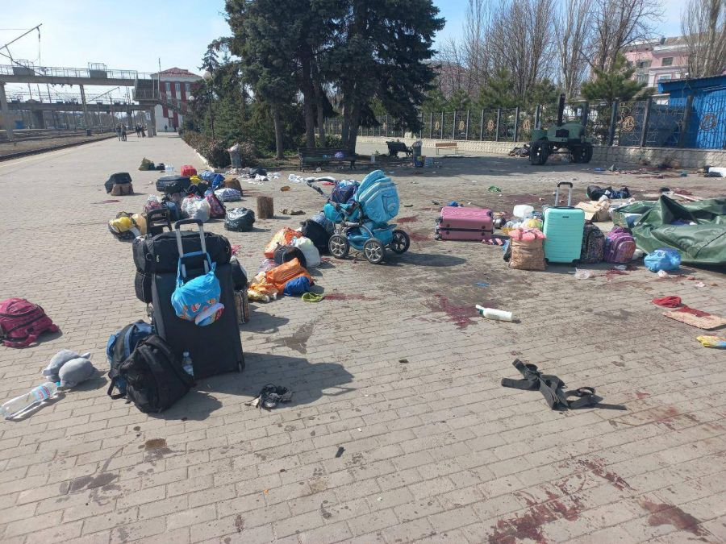

Увесь час натрапляю на більші чи маленькі дискусії про те, як же називати оту сарану, яка насунула на Україну. Варіантів є немало: орки, русня, мордорці, рашисти, тварі, суки, тварини, нелюди… Інші назви не цитую, бо…
Щодо нелюдів зразу погоджуюся, бо це – істина. Не люди вони. Хтось застосував хороше слово «біомаса». Але це, швидше, означення. Так, не люди, а хто?
Найбільше схиляюся до думки, висловленою подружкою Світланою: «А чого ми їх орками називаємо? Орки – це щось казкове, придумане, а ці – реальні, ось живуть по сусідству, становлять реальну загрозу. А ми все ще ніби не віримо, що це – ось – вони – наші вчорашні «брати», і ніби боїмося назвати їх їхнім іменем».
Справді, орки були так само запрограмовані, агресивні та не були людьми. Але вийшли енти – військо дерев і знищили «фабрику» виробництва орків. У нас так не вийде: тут «бабы еще нарожают», – говорив жуков і повторює пуйло. Допустимі втрати соплемінників для нього не якісь 10-20 тисяч загиблих, а до 50-и, – його параноїдальна ідея, вважає, того варта!..
Так само проти мордору був усе ж рецепт, – потрібно було, аби Фродо вкинув у лаву зловісний перстеньок. Де нам знайти такий перстеньок, аби зберегти життя наших ЗСУ та Тероборони?..
Вже висловлювалася щодо тварин, сук і прочих назв, повʹязаних із «братами нашими меншими» (братами не по совєцкому союзу – по життю на землі) – звірями, тваринами. Бо пригадалась у звʹязку з цим читана в університетські часи публіцистика Максіма Горького, стаття «О предательстве». Так от, незначно перефразовуючи, «даже тифозная вошь при сравнении с российским человеком оскорбилась бы».
Навіть воша! А ми наших собак, яких багато хто з переселенців тягнув на собі в евакуацію, бо вони – рідні, будемо порівнювати з цими пуєсосами? Ну нє!.. А де ви бачили оленя, який гвалтує олениху? Ні, він виборює її у двобої! А оті лебеді з парою на все життя?! Яке відношення вони мають до сусіднього держутворення? А хіба звірі вбивають просто так? Лише з доцільністю, зумовленою потребою виживання. Ну хіба що вони скажені… То що, стосовно цих, які навалили, щоразу, називаючи їх тваринами, уточнювати «скажені»? Задовго. Відкидаю цей варіант.
Справді, треба називати речі своїми іменами, щоб це імʹя в чистому вигляді запамʹятовувалося і вкарбовувалося в гени землян як памʹять про щось ганебне, нице, нелюдське – вони РОСІЯНИ. Наголошую: не руські! Тут перегукується з Руссю, з русинами – саме росіяни, біомаса з росії.
І не треба більше
- евфемізмів
- епітетів
- порівнянь
– просто росіяни. І коли ми промовляємо це слово, то в ньому вже закладене все, що ми маємо розуміти.
- Це – суцільна брехня (Ми на вас хотіли напасти? У нас біолабораторї виготовили спецголубів? Це «бендерівці» самі розбомбили свої міста? Ти, маріє захарова, звинувачуєш, що ми ховаємо від усіх рецепт борщу? Навчися гуглити, – знайдеш!..)
- Це – грабунок. (Вам не тиснутимуть кросівки, забрані в українській хаті? Ви довезете до свого хабаровського краю оті привʹязані до танку холодильник і диван? А жіночу білизну, вже використовувану, подаруєте коханій, ой, вибачте, партнерші по сексу, бо яке кохання у непотребу /перекладаю для тих, хто не мовить, – «у отребья»...)
- Це – повна аморальність (Ви чули оті розмови з матерями чи дружинами – отой потік суцільного матюччя, який, очевидно, і позначає «вєлікій і магучій расійскій язик»? Коли жінки їм кажуть на зізнання, що вони тут убивали цивільних: ну і правильно, а спортивного костюма ти там ні в кого не віджав, привези? Коли вони убивають дітей, жінок, старих – аби вбивати?..)
- Це масова неосвіченість (Як вам той військовий чин, який заперечував можливість радіації у чонобильському лісі, бо «там в отечественную еще наши деды окопы рыли»? Тобто Чорнобиль пройшов мимо його свідомості. Як вам скабєєвське «паляница – это у них ягода такая»? А молитва на телевізор не нагадує жорстоку фантастику Бредбері: такого не може бути, бо цього в телевізорі не показали?..)
- Це безкультурʹя, це млявенька совість рефлексуючих, це алкоголізм… Додайте до цього списку своє – і все це (багато й багато) буде те, що називається чітким словом РОСІЯНИ, породження РОСІЇ. Це вони. І наші діти повинні засвоїти, що це вони, а не орки, вурдалаки, упирі – це залишмо літературі та кіно…
Як зараз чую заперечення про «хороших русских». Так, вони є. Але, вибачте, вважаю, – лише як виключення з правила. У кожного правила є виключення, оці 1-2% людей, які розуміють правду й вимовляють це вголос, – оце воно.
Отже, на нас напали росіяни. Й у цьому слові – все, що вони нам принесли.